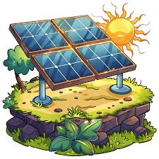

Énergie solaire

Source : L'énergie solaire provient de la lumière et de la chaleur émise par le soleil.
Utilisation : Elle peut être exploitée de plusieurs manières.
Le solaire photovoltaïque convertit directement la lumière en électricité grâce à des panneaux solaires,
qui peuvent alimenter des habitations, des bâtiments publics ou des réseaux électriques.
Le solaire thermique utilise la chaleur du soleil pour chauffer l'eau ou l'air,
par exemple pour les chauffe-eaux solaires ou le chauffage des bâtiments.
Enfin, le solaire concentré (CSP) concentre les rayons du soleil pour produire de la vapeur et générer de l'électricité dans les centrales solaires.